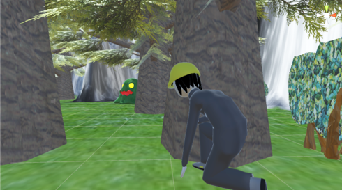
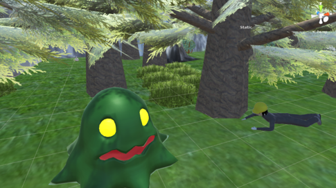
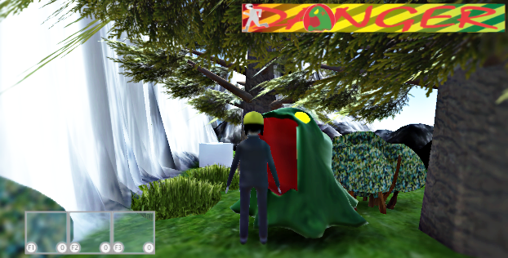
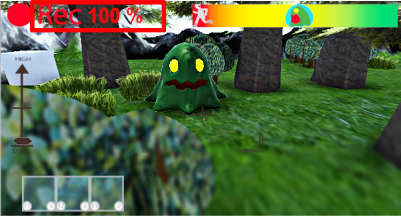

コンセプト」：大自然の中でクリーチャーを撮影するゲーム
|  |  |  |  |
PV
作品ダウンロード
作品ZIPファイルをダウンロードブックレットダウンロード
ブックレットファイルをダウンロード制作人数
6人
担当
プロジェクトリーダー・制作進行・企画
制作目的
東京ゲームショウにて東京工科大学・日本工学院専門学校の展示ブースへの出展
プラットフォーム
PC
制作環境
Unity
ターゲット
未確認生物（UMAなど）が好きな人
制作期間
半年間
制作について
初めてのゲーム制作でわからないことだらけでしたが先生や先輩、チームメンバーに支えられて完成することができ良い経験をすることができました。
企画の段階からメンバー内で作りたいゲームの方向性が様々で意見をまとめることに苦労しました。しかし、「やりたいこと」「面白いこと」などアイデアを出し合いまとめる事で、企画を立てることができました。
完成後に実際に多くの方にプレイしていただき、感想やアドバイスを頂くことができました。
また、制作のスケジュール管理では、作業ごとのスケジュール管理が難しくそのせいで遅れてしまうことがあり、メンバーに助けられました
自分が関わったゲームを楽しんでプレイしているところを直接見ることができてとてもやりがいと達成感を味わうことができました。